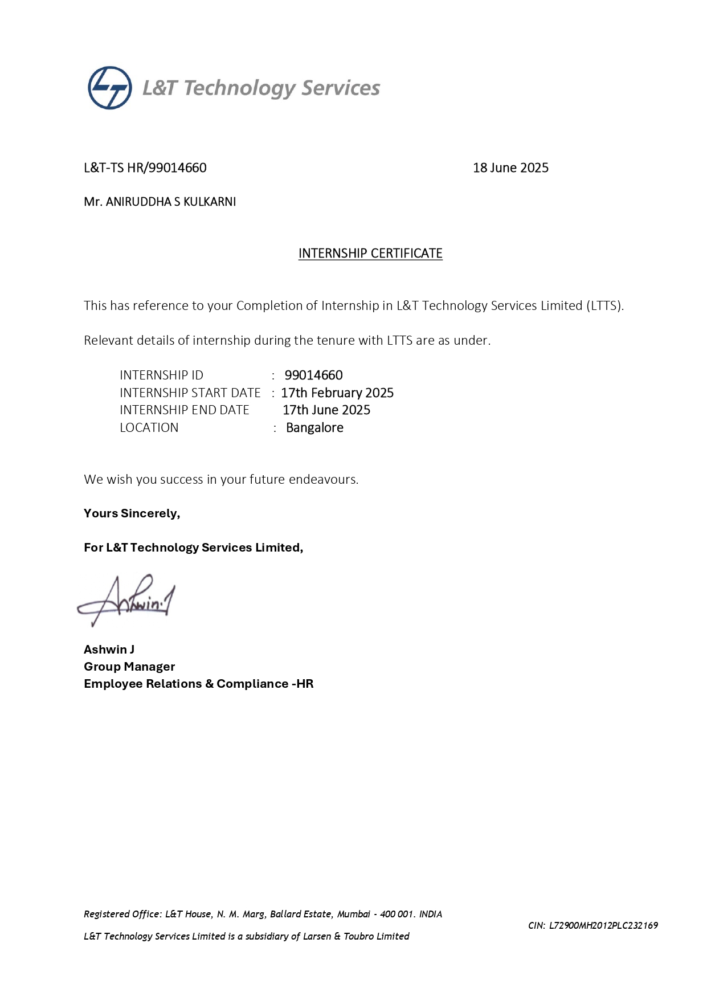

Internship Overview
During my internship at LTTS Banglore, I worked on Project SPINDLE. SPINDLE stands for Software Platform for Integrated Delivery Efficiency. Project Spindle is an internal enterprise platform designed to streamline the onboarding, configuration, and orchestration of various software projects.It acts as a centralized system that enables teams to rapidly set up and manage new projects with standardized configurations, user interface components, and automated deployment workflows.
I also accomplished ISMS (Information Security Management System) course & Data Security course.
Tools Used for the Project
- React JS (Frontend)
- Node Express (Backend)
- MySQL (Database)
- Sonarqube (Static Code Analysis)
- Jenkins (DevOps - CI/CD Pipelines)
Project Overview
- UI Component : This component provides the interface through which users interact with the platform to configure and onboard new projects. Configure and Onboard projects.
- Orchestrator Component : This backend component automates the entire CI/CD pipeline and manages software deployment workflows:
- Execute Pipelines
- Build
- Test
- Deploy Software
- This project makes use of V-Model SDLC. The V-Model (also known as the Verification and Validation model) is a software development life cycle (SDLC) model that extends the traditional Waterfall.It emphasises testing and validation at every stage of development. It’s called the "V" model because the process is shaped like the letter "V", where the left side represents development stages and the right side represents testing and validation stages, forming a symmetric structure.
Certificate

Attachment
You can view the detailed project ppt here.